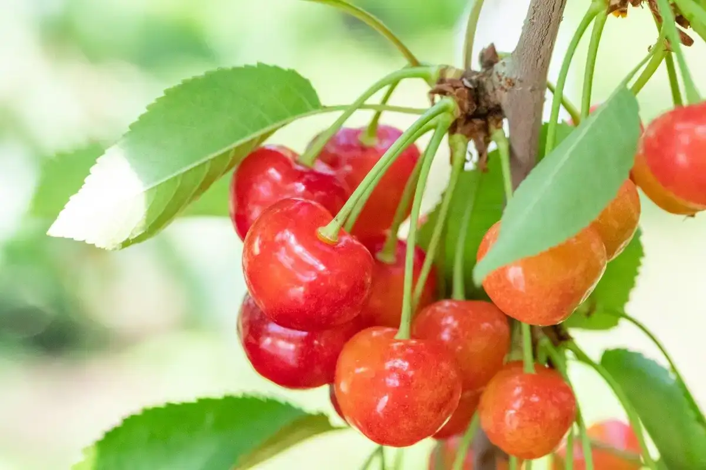
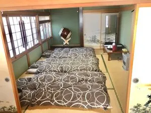
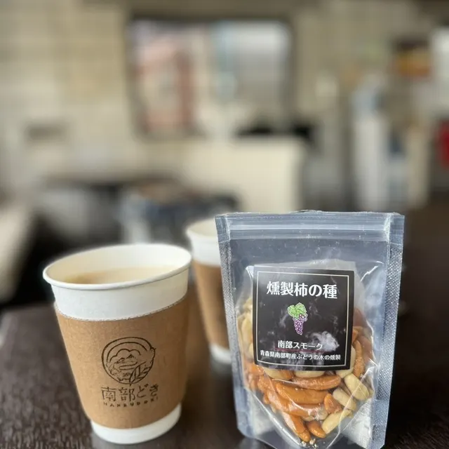
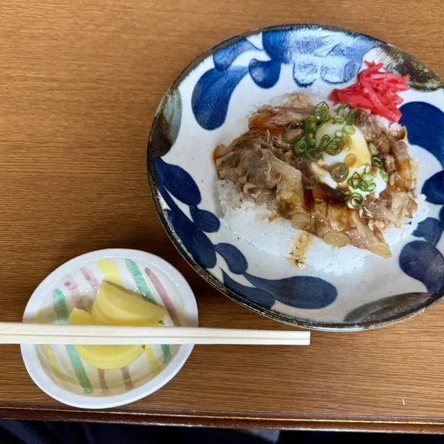
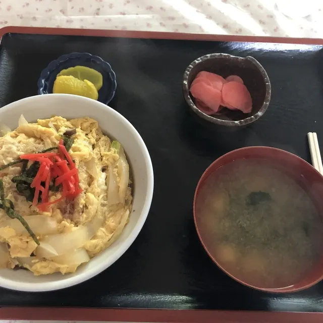
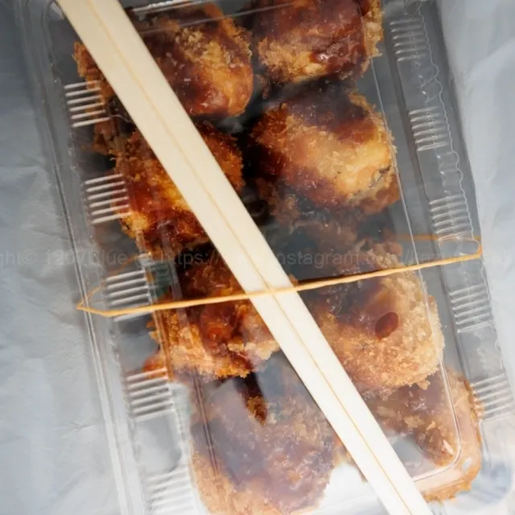
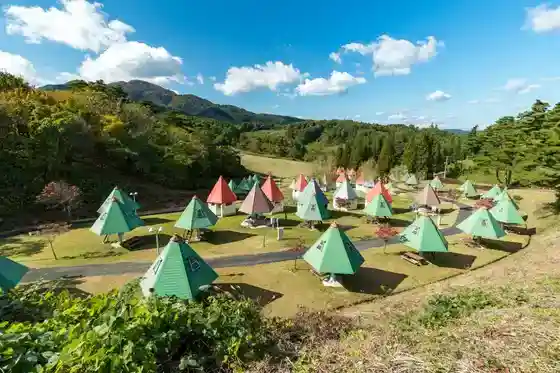
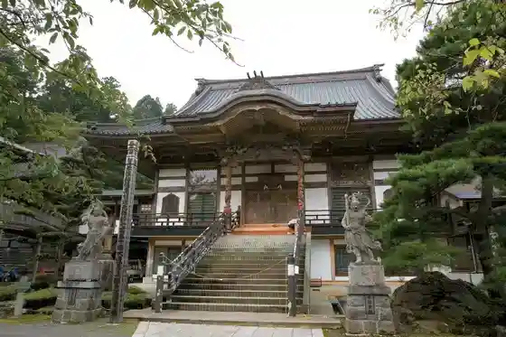

Nanbucho
Nanbucho · Aomori
Nanbucho
Highlighted on the Aomori map.

Stay
福地温泉 バーデパーク アヴァンセふくち
Fukuchi Onsen Baadepaaku Avanse Fukuchi
津軽三味線・民謡・南部手踊り 繭子の宿

Tsugarujamisen Minyou Nanbu Teodori Ri Mayuko No Yado
Dining
西塚商店
Nishizuka Shouten
中華料理 連翹
Chuukaryouri Rengyou
スイーツガーデンKUDO
Suiitsugaaden Kudo
キリン食堂
Kirin Shokudou
南部どき

Nanbu Doki
BONBON ICECREAM&JELATO
Bonbon Icecream&Jelato
まんぷく食堂

Manpuku Shokudou
春香
Haruka
LAWSON 南部町バイパス店
Lawson Nanbu Machi Baipasu Mise
ドライブイン天狗

Doraibuin Tengu
野田仕出し店
Noda Shidashi Mise
丸長製菓
Maru Chou Seika
照井菓子店
Terui Kashi Mise
マヨたこ 大阪堂 南部町店

Mayo Tako Oosaka Dou Nanbu Machi Mise
熊谷菓子店
Kumagaya Kashi Mise
Hiro's Kitchen
Hiro'S Kitchen
一ノ渡仕出し店
Ichi No Watari Shidashi Mise
戸室せんべい店
Tomuro Senbei Mise
竹林せんべい店
Chikurin Senbei Mise
レストランかだぁる
Resutoran Kadaaru
ナマステダイニング
Namasutedainingu
きたむら茶屋&殿さまあんぱん店
Kitamura Chaya & Dono Samaanpan Mise
たいやき屋さん ねこのひげ
Taiyaki Ya San Nekonohige
平田商店
Hirata Shouten
Sights
Nanbu Cherry Picking
Early-summer cherry picking in Nanbu, a fruit-growing town with picking from spring to autumn.
Nagawa Cherry Lin Village

Outdoor facility at the foot of Mt. Nakui in fruit country.
Hakkasan Hokoji Temple

Hakkasan Hokoji Temple is located in Nanbu Town. It is said that Joyoto, constructed in 1949, is the tallest three-story pagoda in Japan.
Bade Park
Complex with pools, hot spring, gym, restaurant, ice arena and lodging in Fukuchi.
Hase Peony Garden
3.3-hectare garden of 8,000 peonies in 130 varieties on Mt. Nakui.
Nanbu Toshiyasu Mausoleum
Momoyama-style mausoleum with vivid color, lacquer and gilded fittings.
Nanbu Furusato Bussankan
Farm market run by local growers selling fruit, vegetables, flowers and sweets.
Nagawa Cherry Center
Farm market on Route 4 with a cherry sign, selling local vegetables and fruit.
Nagawa Agri-Tourism Information Center
Log house that introduces local orchards and books farm experiences.